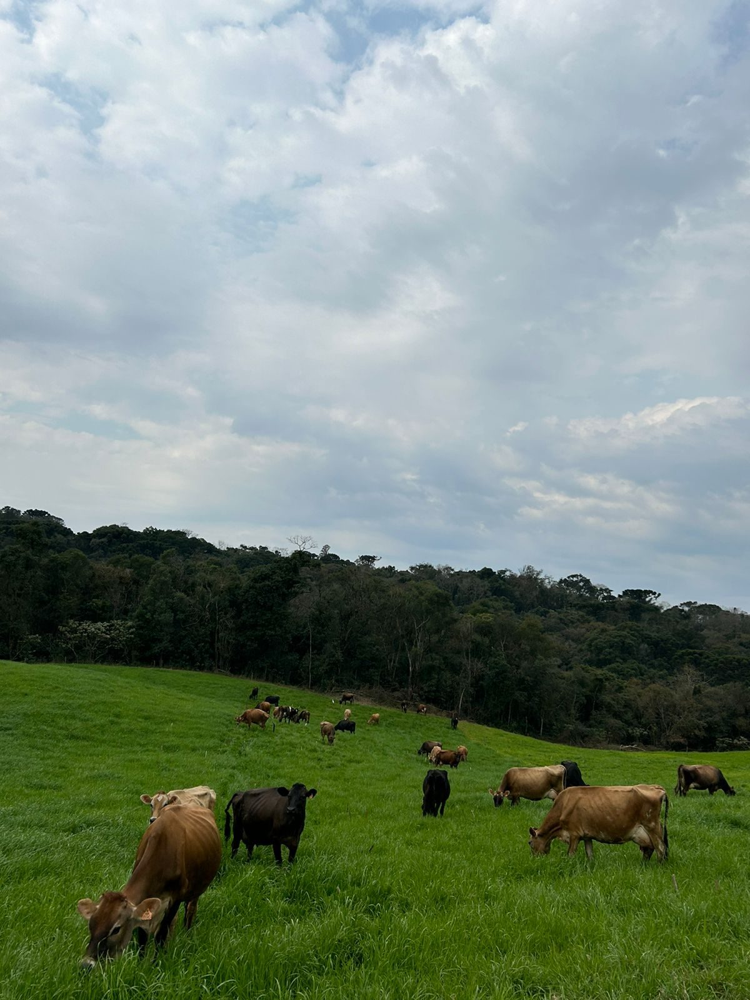

Matéria Prima
A matéria prima do Laticínios Vó Elena sempre foi produzida na própria propriedade. Com vacas, em sua maioria, da raça Jersey, a qual produz o leite com mais gordura, garantindo a qualidade e o sabor no produto final.
Além de serem criadas livres, com dieta feita por profissionais para entregar um produto final com a maior qualidade possível. Contando também com processos de fiscalização e testes semanais, selo de inspeção e muita responsabilidade e cuidado com os produtos.